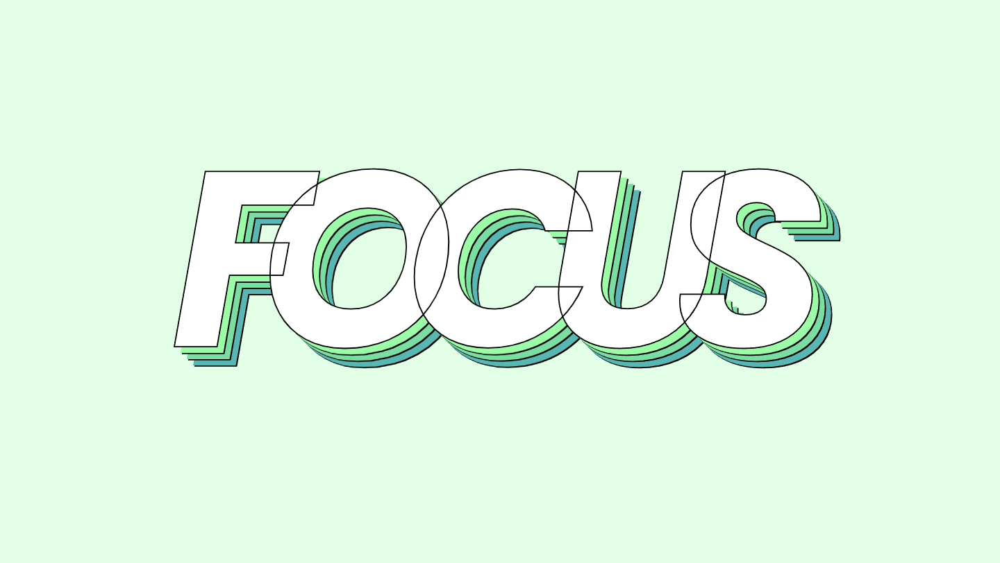

Pour cet exercice, vous devez manipuler les propriétés de texte en CSS afin de recréer un effet typographique.
Aperçu du résultat 👇

Matériel
Pen de départ
Couleurs 🎨
#ffffff
#000000
#9afba6
#7adda1
#59B6B3
Requis
Attribuez la couleur blanche ⚪, une taille de 200px et la police Poppins au texte.
Ajoutez une bordure noire ⚫️ de 1px autour de chaque lettre.
Resserrez l'espace horizontal ↔️ entre les lettres de l'équivalent d'un 1/5 de lettre.
Centrez le texte horizontalement ↔️ au centre de son conteneur.
Transformez le texte en majuscules.
Ajoutez plusieurs ombres au texte toutes décalées de 5px de plus les unes des autres vers la droite et le bas du mot original ↘️ avec les couleurs vert menthe, vert et turquoise.
Ajoutez entre chacune des ombres une ombre noire ⚫️ supplémentaire à peine plus décalée de 1px que la précédente afin de générer une ligne noire entre chaque ombre de couleur.
Notes de cours 📚
Font
color, family, weight, size, style, line-height
Text
align, decoration, transform, stroke, shadow